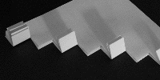
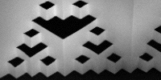

Fractal Folds Lab Procedure
The Sirepinski Gasket
First cut and fold
First fold refolded and the second cut
Second fold refolded and the third cut
Third fold refolded and the fourth cut

Unfold to see the gasket

Return to
PaperFolding Lab Procedure
.